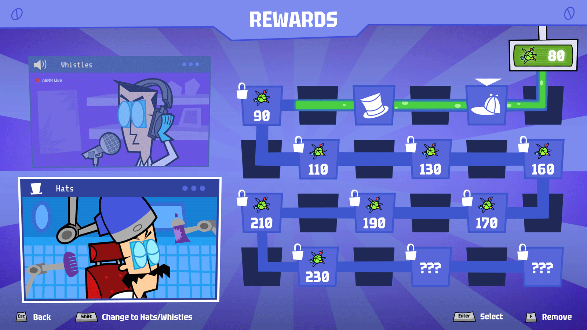
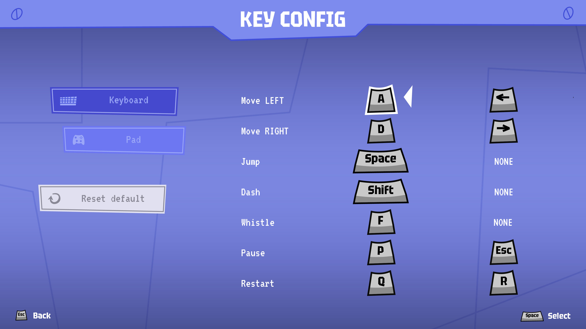
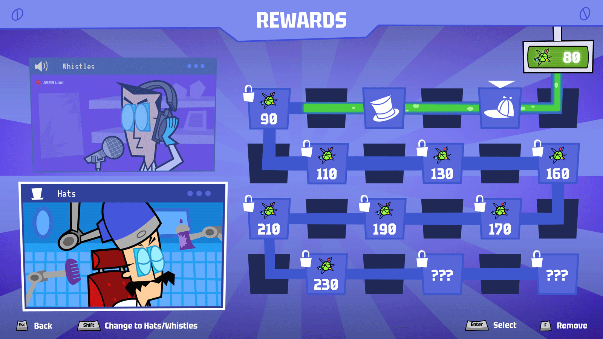
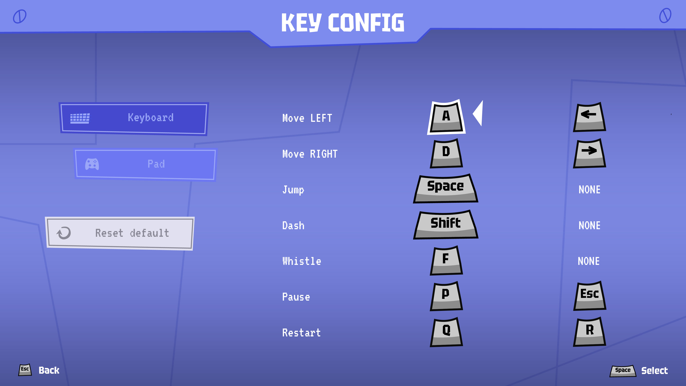
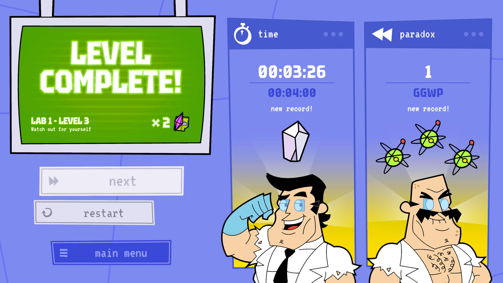
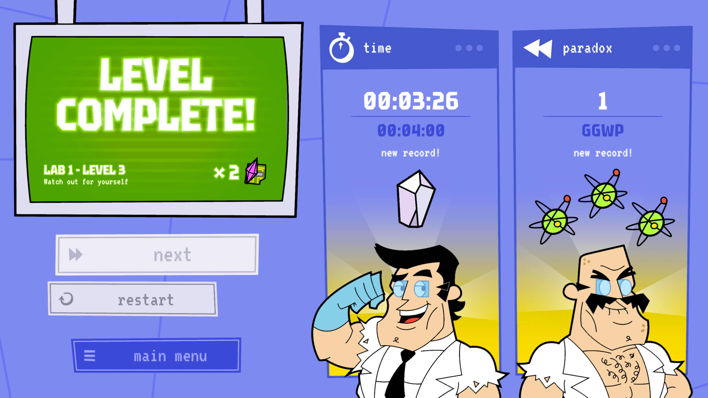

Since the success in the academic environment as a school project, Paradox! is currently in develop for a market release.
The current development team, albeit small, is highly versatile with each member contributing to multiple aspects of the project.
As designer, my primary focus is on refining the User Interface (UI) for an enhanced gaming experience.
DISCLAIMER: The images presented are from a beta version and may not accurately reflect the final version of the game.
Role
UI Design, Game Design, Icons and Design system, Art direction
Softwares used
Illustrator, Photoshop, Unity
Collaborators
Riccardo Rigamondi


 



 
